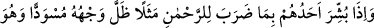
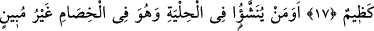
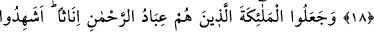
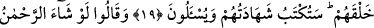
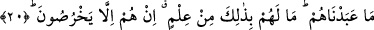
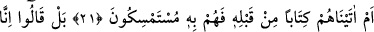
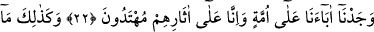
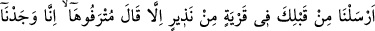
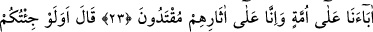
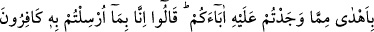
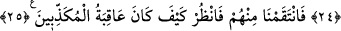
BAK,
YALANLAYANLARIN SONU
NASIL OLDU?
17. Onlardan biri, Rahmân’a isnat ettiği kız çocuğuyla müjdelenince,
hiddetlenerek yüzü simsiyah kesilir.
18. Süs içinde yetiştirilip savaş edemeyecek olanı mı istemiyorlar? (Onları
Allah’ın parçası mı sayıyorlar?)
19. Onlar, Rahmân’ın kulları olan melekleri de dişi saydılar. Acaba meleklerin
yaratılışlarını mı görmüşler? Onların bu şâhidlikleri yazılacak ve sorguya
çekileceklerdir.
20. Ve dediler ki: Rahmân dileseydi biz onlara tapmazdık. Onların bu hususta bir
bilgileri yoktur. Onlar sadece yalan söylüyorlar.
21. Yoksa bundan önce onlara bir kitap verdik de ona mı tutunuyorlar?
22. Hayır! «Sadece, biz babalarımızı bir din üzerinde bulduk, biz de onların izinde
gidiyoruz» derler.
23. Senden önce de hangi memlekete uyarıcı göndermişsek mutlaka oranın
varlıklıları: Babalarımızı bir din üzerinde bulduk, biz de onların izlerine uyarız,
derlerdi.